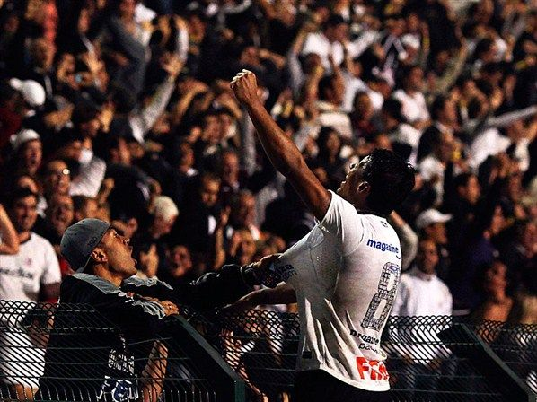
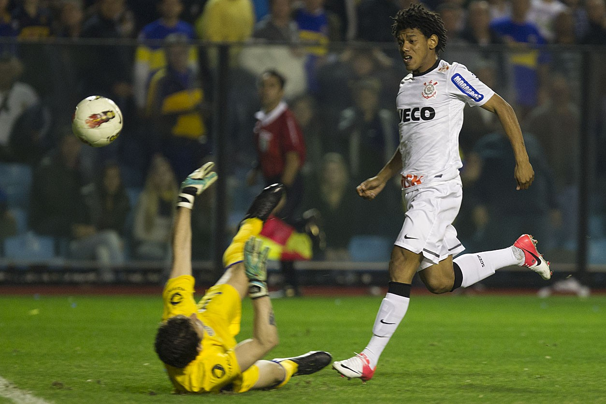
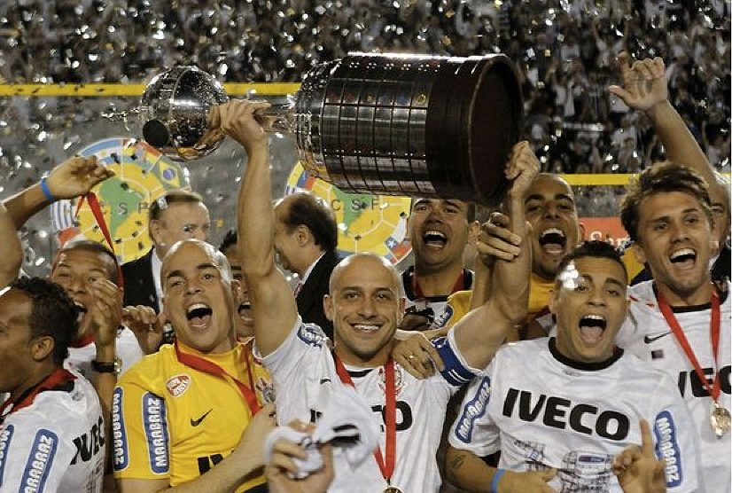

O quão corinthiano você foi em 2012?
Atenção, considere por na ordem que se encontra os jogos na tela
JOGO IDA
1° EMELEC X CORINTHIANS
JOGO DE VOLTA
2° CORINTHIANS X EMELEC
JOGO DE IDA
3° VASCO X CORINTHIANS
JOGO DE VOLTA
4° CORINTHIANS X VASCO

JOGO DE IDA
5° SANTOS X CORINTHIANS
JOGO DE VOLTA
6° CORINTHIANS X SANTOS

JOGO DE IDA
7° BOCA JUNIORS X CORINTHIANS

JOGO DE VOLTA
8° CORINTHIANS X BOCA JUNIORS
